Drivetrain - Binding/Shuddering On Low Speed Turns/DTC's
ConditionDrivetrain Binding/Tires Scrubbing During Low Speed Maneuvering, ESP Light in Instrument Cluster ON or Flashing
During low speed turns/maneuvering, vehicle drivetrain feels as if it is binding or tires are scrubbing on pavement. Customer may also state that the ESP light in instrument cluster is ON or Flickering. Other customer described concerns may include, but are not limited to:
- Tension in drivetrain
- Vibration and load sensitive knocking from the drivetrain
- Cracking noise upon acceleration from stop, while cornering or driving slowly
- Shudder when cornering
- Rubbing or slipping when cornering
- Electronic faults in 22-Four wheel drive electronics: DTC's 02033, 02039, 02042 or 02409 stored.
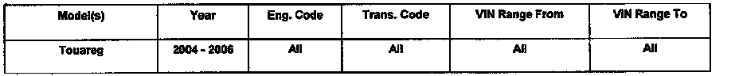
01 06 08 Jul. 12, 2006, 2011930, Supersedes T.B. Group 39 Number 04-02 dated June 21, 2004 due to updated procedure and bulletin being removed from Required Vehicle Update category.
Technical Background
The clutch disc of the differential has a remaining locking effect because of the differential control module software.
This is perceived as tension in the drivetrain.
Tip: The above symptoms can occur when driving with summer tires at temperatures below 7 degree C (45 degree F). In this temperature range the summer tires lose their elasticity. When fully turning the steering wheel the tire cannot correctly roll out and begins to bounce (slip - stick effect). This effect leads to the assumption of tension in the drivetrain, but the tension is in the tire wear pattern.
Production Solution
Improved control of the locking effect with updated Differential Control Module -J646- software.
Service
1. Enter Guided Fault Finding and complete the test plans for DTC's found.
2. Inspect all wheels and tires for standard equipment, tire size, tread depth and tire pressure. Four wheel drive vehicle tires must not be unevenly worn.
3. Check for tension in the drivetrain by driving the vehicle around a tight bend with the transmission gear selector in" D".
If the tension in the drive train eases, check whether the differential control module has the current software version 0122.If not, update as necessary using CD W42SWU0122 following the procedure below.
Tip: When performing the reprogramming procedure, ALL DTCs for all systems are erased. DTCs linked to Guided Fault Finding function tests will be lost. Therefore, always address stored DTCs for Customer concerns unrelated to the reprogramming procedure first.
The following "Update - Programming" (flashing) process may overwrite any "TUNED" Control Module programming. A "TUNED" Control Module is described as any Control Module altered so as to perform outside the normal parameters and specifications approved by Volkswagen of America, Inc.
If you encounter a vehicle with a" Tuned" Differential Control Module, prior to performing the" Update -Programming" (flashing) procedure:
- Your Dealership should place the vehicle owner on notice in writing, that their Differential Control Module was found to have been tuned, and that any damage caused by the tuning of the Differential Control Module (including any adverse emissions consequences) will not be covered by Volkswagen of America, Inc. warranties.
- For any repair requested by the owner under warranty or outside warranty that requires flashing, which will automatically wipe out the" Tuning " program, your Dealership should advise the owner of the above and get his written consent to the flashing procedure.
Tool Requirements
- VAS 5051, VAS 5051 B or VAS 5052 (with Base CD V.08.01.00 and the Brand CD V.8.69.00 or higher).
- " Update - Programming" (flashing CD W42SWU0122). Vehicle requirements
- Battery MUST have minimum no-load charge of 12.5 V (failure to maintain voltage during update process can lead to Differential Control Module failure) (it is advised to use an approved battery charger to maintain battery voltage).
- VAS 5051, VAS 5051 B: connected to vehicle and to 110 V AC power supply at all times during procedure.
- VAS 5052: connected to vehicle with battery voltage requirements met.
- Any appliances with high electromagnetic radiation (i.e. mobile phones) switched OFF.
- When performing the updated programming procedure, ALL DTCs for all systems are erased.
- DTCs linked to Guided Fault Finding function test will be lost. Therefore, always address stored DTCs for Customer concerns unrelated to the update programming procedure first
NOTE: Non-observance of the following points may lead to Differential Control Module failure. VAS 5051 or 5052 must always be connected to the approved power supply at the approved voltages. Under no circumstances should the power supply be interrupted or the diagnostic connector unplugged during the flash procedure. Any appliances with high electromagnetic radiation (i.e. mobile phones) must be switched OFF.
"Update - Programming" (flashing) procedure, checking for update match
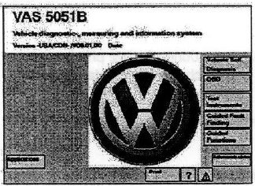
- Switch ignition ON.
- Switch VAS 5051, VAS 5051B or VAS 5052 ON and insert flash CD into CD drive as soon as start screen appears.
NOTE:
You must return to the start screen before starting a new (flashing) session, otherwise the flashing CD will not be recognized by the tester.
- Select" Vehicle Self Diagnosis" mode.
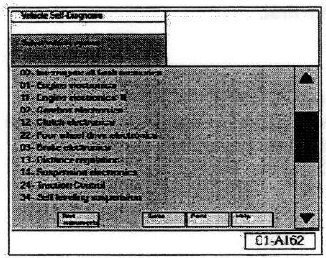
Similar screen appears. Using the scroll bar to the right of the screen:
- Scroll and select vehicle system" 22-Four wheel drive electronics".
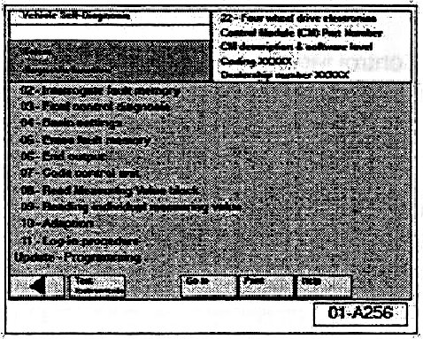
Similar screen appears.
NOTE:
The "Update - Programming" function is only available when the inserted flashing CD level and current vehicle Differential Control Module level are different.
If "Update - Programming" does not appear:
- Programming (flashing) Differential Control Module cannot be performed, continue to diagnose condition.
If software level DOES NOT match the level indicated on Flashing CD:
- " Update - Programming" function appears.
PRIOR to performing procedure to "Update - Programming" (flash) the Control Module:
- ALL fault memories must be interrogated and erased.
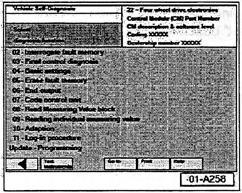
Similar screen appears.
- Select" Update - Programming" option.
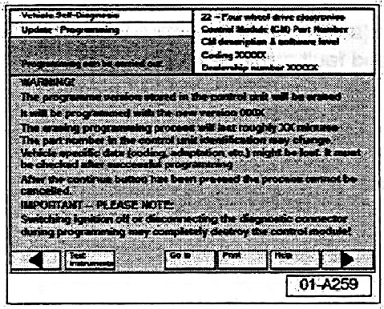
Similar screen appears.
- "Update - Programming" (flashing), performing for 4WD electronics
After selecting" Update - Programming" function:
- Selecting the forward arrow button, the Differential Control Module programming procedure begins.
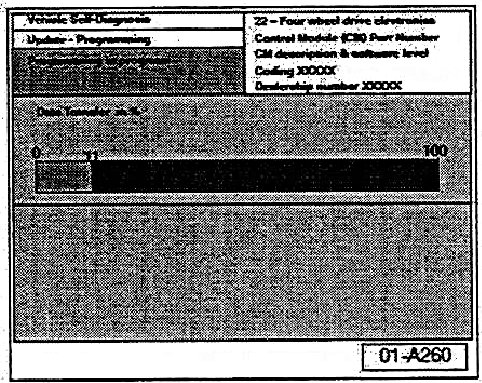
Similar screen appears.
The previous data in the Differential Control Module is erased and the new data is being transferred to the module from the flash CD.
NOTE: Once "Update - Programming" function has been started, switching ignition OFF or disconnecting the diagnostic connector may completely destroy the Differential Control Module.
Follow tester screen instruction.
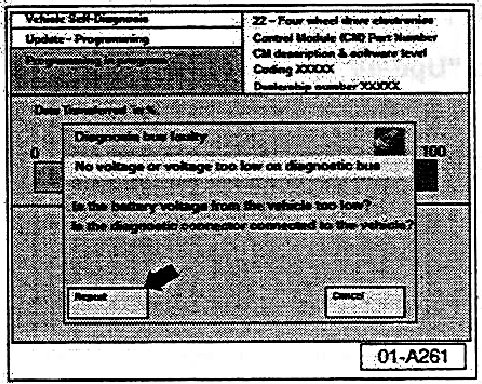
Tip:
If, during the "Update - Programming", a fault message is displayed:
- Confirm that VAS 5051, VAS 5051 B, or VAS 5052 diagnostic tool power supply is adequate and that ALL appliances with high electromagnetic radiation (i.e. mobile phones) are switched OFF.
- The" Update - Programming" (flashing) process must then be started from the beginning using the" Repeat" button (arrow). DO NOT use the" Quote" button.
NOTE: On NO occasion should the "Cancel" button be selected.
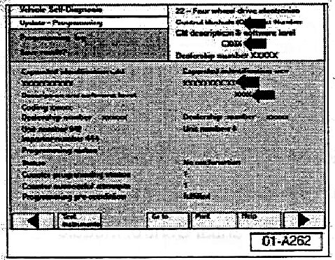
Once" Update - Programming" (flashing) is complete:
- Similar screen appears.
Tip: Old software level is still displayed at (arrows). New software level is not displayed until process is complete and fault memories have been erased.
- Print this screen.
- Attach print to vehicle Repair Order.
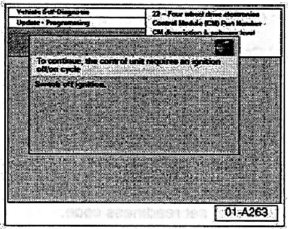
Once" Update - Programming" (flashing) is complete, the Differential Control Module must be re-initialized.
- Select the forward arrow button.
- The tester requests you to switch the ignition OFF.
- Switch ignition OFF.
NOTE: Wait at least 20 seconds before switching the ignition back ON (failure to wait at least 20 seconds may damage the Control Module). After waiting 20 seconds:
- Switch ignition ON.
After switching ignition ON, the Differential Control Module has been reinitialized, however, fault memories must now be erased.
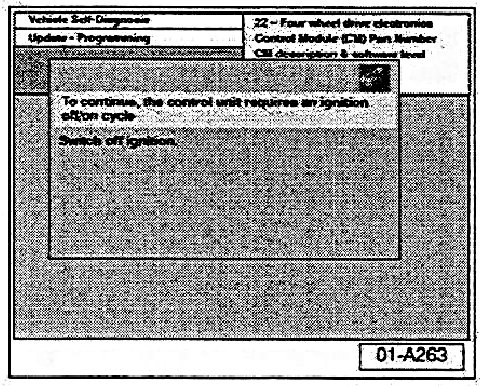
Fault memories, erasing after "Update - Programming" (flashing)
Due to the CAN bus system, fault messages will be stored in various Control Modules during programming.
- To erase ALL fault memories, confirm by selecting the forward arrow button.
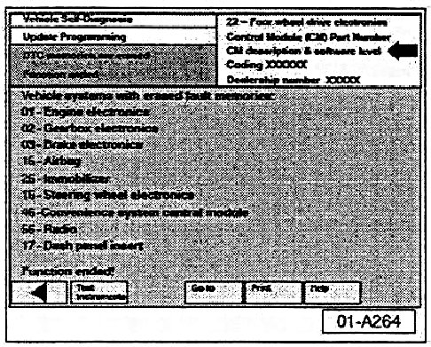
Tip: This will take a few minutes, depending on how many control modules are accessed.
Once fault memories have been erased:
- Similar screen appears.
- Old Differential Control Module Part No. and software level still appear at (arrow).
- Function ended appears at bottom of screen.
- Finish update of the Differential Control Module by selecting the backward arrow button.
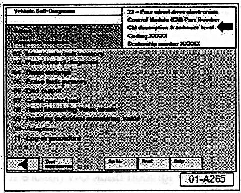
- New update version software level" 0122" will appear at (arrow).
- Print this screen to verify Differential Control Module software level.
- Attach print to vehicle Repair Order.
- Flash CD can now be removed from VAS 5051, VAS 5051 B, or VAS 5052 Diagnostic tool.
- Select" Go to" then select" Exit".
- Use VAS 5051, VAS 5051 B or VAS 5052 to set readiness code.
- Test drive to ensure condition has been resolved.
Tip: Before replacing the differential motor or differential, contact the VW Helpline and observe the reporting obligation.
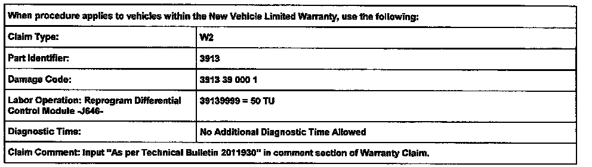
Warranty
Required Parts and Tools
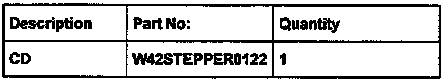
Part numbers are for reference only. Always check with ETKA for the latest parts information.
Additional Information
NOTE:
Additional copies of the "Update - Programming" CD (Literature Number W42SWU0122) may be ordered from the Volkswagen Technical Literature Ordering Center.